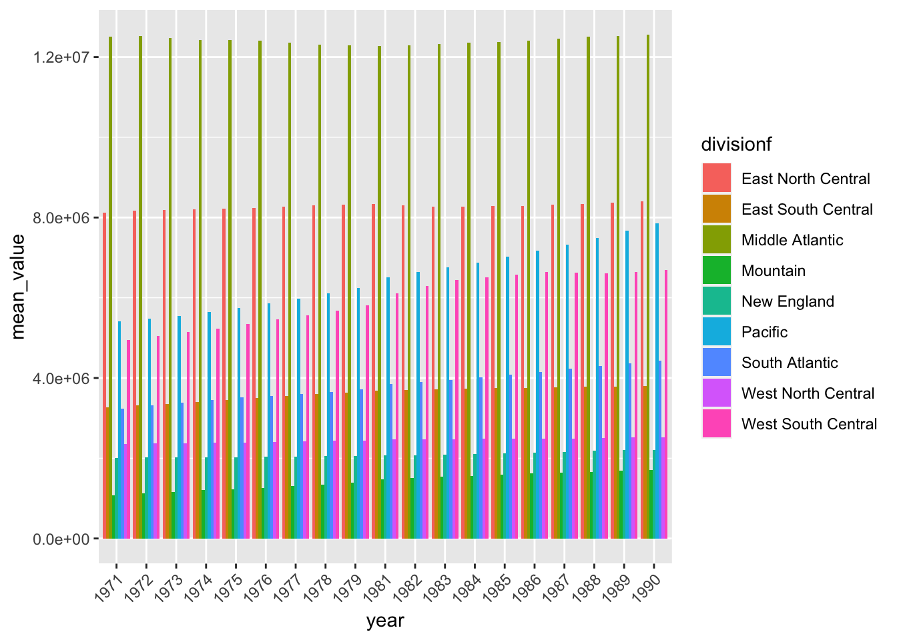
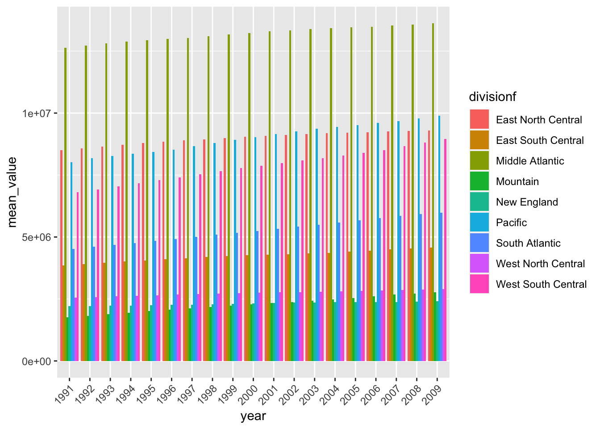

Data Processing and Visualization of Educational Enrollment Statistics
Author
Alex Devoid and Cheng Chen
Published
June 18, 2024
Data Processing
First Steps
This code block reads in the first CSV file, selects only the relevant columns (Area_name, STCOU, and columns ending in “D”), renames the Area_name column to area_name, and converts the data to long format. The mutate function is used to extract the year from the EDU column and create a measurement variable.
library(tidyverse)
── Attaching core tidyverse packages ──────────────────────── tidyverse 2.0.0 ──
✔ dplyr 1.1.4 ✔ readr 2.1.4
✔ forcats 1.0.0 ✔ stringr 1.5.1
✔ ggplot2 3.4.4 ✔ tibble 3.2.1
✔ lubridate 1.9.3 ✔ tidyr 1.3.0
✔ purrr 1.0.2
── Conflicts ────────────────────────────────────────── tidyverse_conflicts() ──
✖ dplyr::filter() masks stats::filter()
✖ dplyr::lag() masks stats::lag()
ℹ Use the conflicted package (<http://conflicted.r-lib.org/>) to force all conflicts to become errors
library(dplyr)library(ggplot2)library(httr)# Read csv or handle error when www4.stat.ncsu.edu is down.read_csv_safe <-function(url, max_retries =3, timeout =20) {for (i inseq_len(max_retries)) { response <-tryCatch({GET(url, timeout(timeout)) }, error =function(e) {NULL })if (!is.null(response) &&http_status(response)$category =="Success") {return(read_csv(content(response, "text"), show_col_types =FALSE)) } elseif (i == max_retries) {stop("Failed to download data after ", max_retries, " attempts") } }}EDU <-read_csv_safe("https://www4.stat.ncsu.edu/~online/datasets/EDU01a.csv") |>select(Area_name, STCOU, ends_with("D")) |>rename(area_name = Area_name) |>pivot_longer(cols =3:12, names_to ="EDU", values_to ="enrollment_value" ) |>mutate(year =ifelse(as.numeric(substr(EDU, 8, 9)) <50, paste0("20", substr(EDU, 8, 9)), paste0("19", substr(EDU, 8, 9))),measurement =substr(EDU, 1, 7))
No encoding supplied: defaulting to UTF-8.
This block filters the data to include only county-level data (rows where area_name contains a comma), extracts the state abbreviation, and assigns a new class county to the dataset.
This block filters the data to include only non-county-level data (rows where area_name does not contain a comma), assigns the appropriate division based on the area_name, and assigns a new class state to the dataset.
EDU_noncounty <- EDU |>filter(!grepl(",", area_name)) |>mutate(division =ifelse(toupper(area_name) %in%toupper(division1), "New England",ifelse(toupper(area_name) %in%toupper(division2), "Middle Atlantic",ifelse(toupper(area_name) %in%toupper(division3), "East North Central",ifelse(toupper(area_name) %in%toupper(division4), "West North Central",ifelse(toupper(area_name) %in%toupper(division5), "South Atlantic",ifelse(toupper(area_name) %in%toupper(division6), "East South Central",ifelse(toupper(area_name) %in%toupper(division7), "West South Central",ifelse(toupper(area_name) %in%toupper(division8), "Mountain",ifelse(toupper(area_name) %in%toupper(division9), "Pacific","ERROR"))))))))) )class(EDU_noncounty) <-c("state", class(EDU_noncounty))
Writing a Generic Function for Summarizing
We define two custom plot functions, one for state-level data and one for county-level data. The plot.state function takes a state-level dataframe, filters out rows with “ERROR” in the division, calculates the mean enrollment value for each division and year, and creates a bar plot using ggplot2.
The plot.county function takes a county-level dataframe, filters the data for the specified state, calculates the mean enrollment value for each county, and creates a bar plot for the top and bottom m counties by mean enrollment value.
We define functions to automate the steps for reading and processing the datasets. These functions read and process the data, splitting it into county and non-county data frames, and assigning appropriate classes.
A wrapper function combines the previous functions to process and combine datasets.The wrapper_function processes a given URL, while combine_data combines the results from multiple calls to the wrapper function.
We apply the wrapper function to the given datasets and combine them. We call the processing and combining functions for the two datasets, and then use the custom plot functions to visualize the results.
combined_data2 <-combine_data(data3, data4)combined_data3 <-combine_data(data5, data6)# Use the plot function on the state data frameplot.state(combined_data2$noncounty)

plot.state(combined_data3$noncounty)

# Use the plot function on the county data frameplot.county(combined_data2$county, "CA", 15)